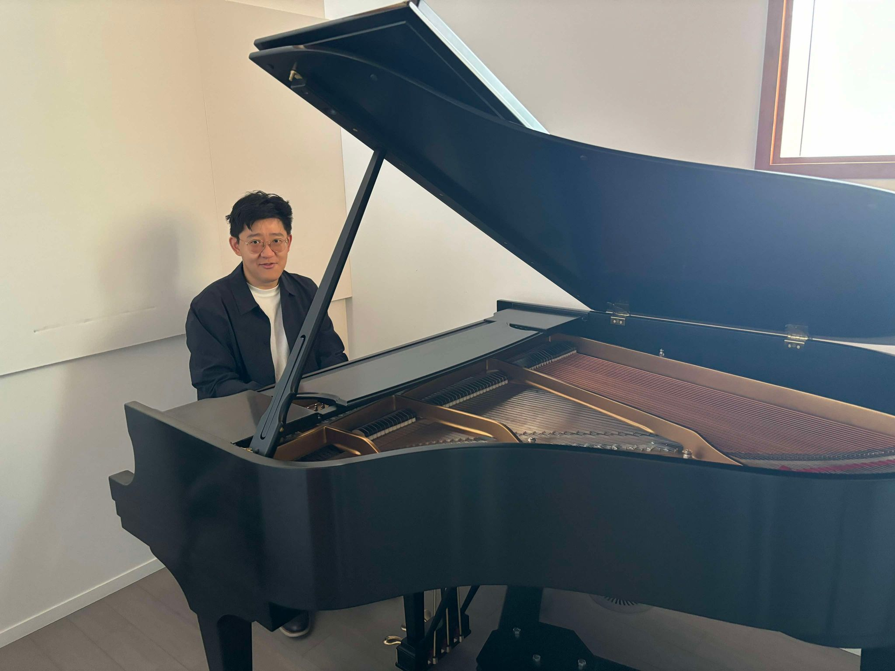
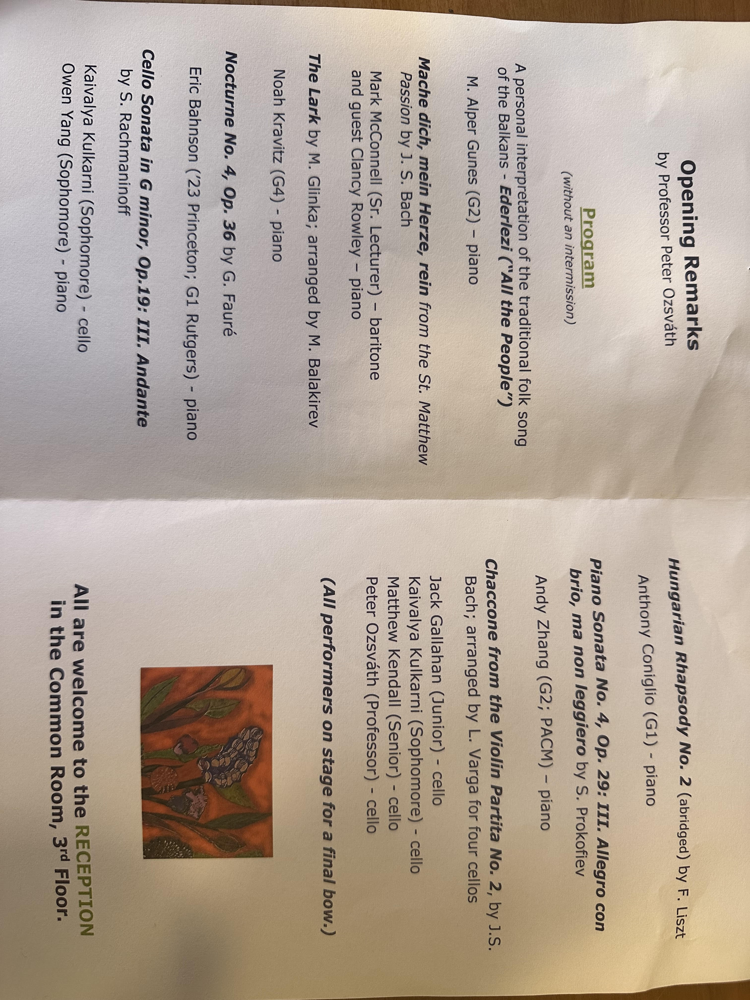

Non-academic things about me, for those interested.

I am an amateur pianist (piano hobbyist?). I have a Youtube; the link is here. Youtube last updated 2020.
The mathematics department has a wonderful annual spring recital; the 2024 program is included below and includes my most recent performance:

At Duke University, I played the first movement of Prokofiev's second piano concerto, Op. 16 with the orchestra. While not with the orchestra, I have performed the second and third movements as well (there's no recording of the finale, sadly).